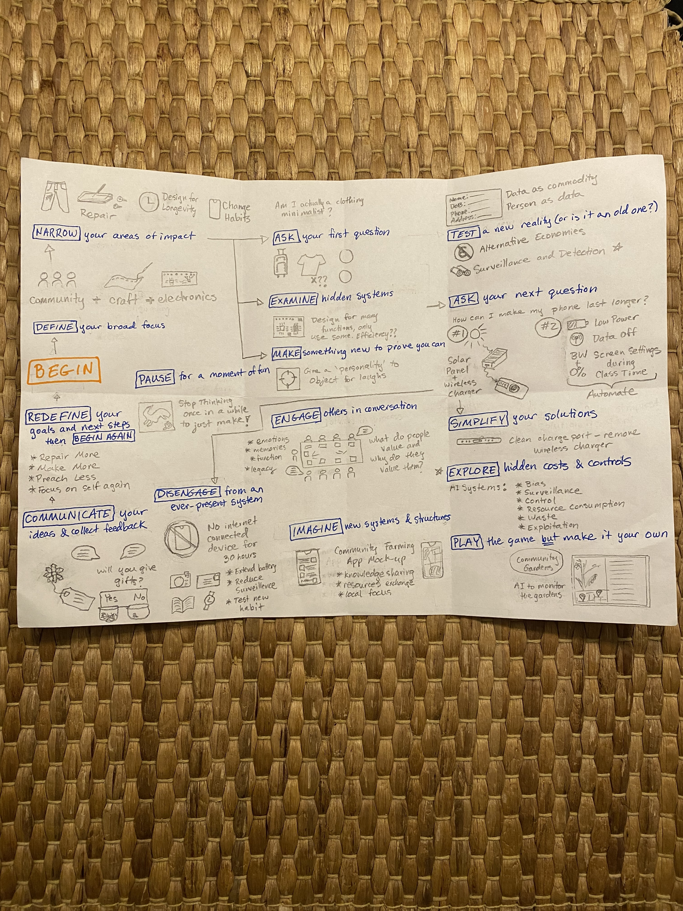
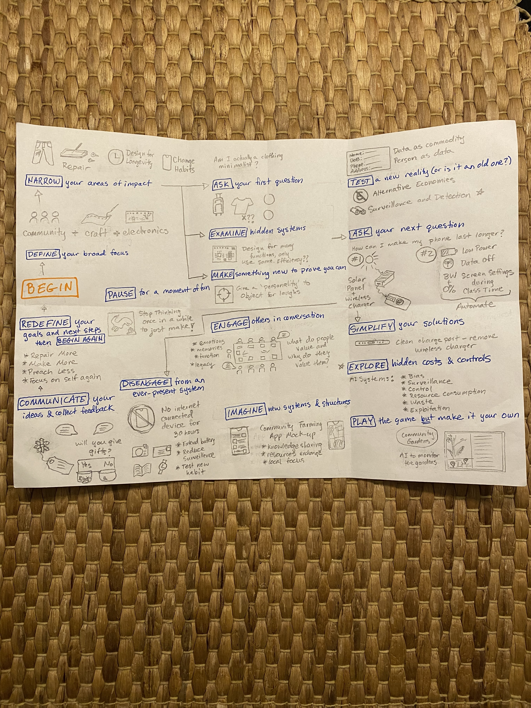

Design Studio 01 - End of Term
Course Details
Name: Design Studio 01 - End of Term
Dates: 06 January 2025
Faculty: Jana Tothill Calvo & Roger Guilemany
Draft Pictorial
Here is the draft of my pictoral. The idea has changed a bit since my initial proposal. After the Design Dialogues, I felt that my vision had changed about what I wanted to communicate and how. Now, I am interested in exploring the idea of taking small actions in the face global, overwhelming crises. I want to highlight the idea of scaling back. The format still includes a letter, a hand-made envelope, and drawn reflections on my work. However now it focuses on communicating the idea of scale, measurable steps, and a somewhat chaotic process which feels integral to how my term has felt. I hope that the chaos does not distract too much from the message I am trying to get across.
 



The text of the letter:
Dear Reader,
I hope you are doing well and not thinking too much about the current state of affairs. Here’s the thing, we live in a world in crisis, which is overwhelming and scary. There is a global climate emergency perpetrated by over-consumption, over-production, and massive amounts of waste, all driven by the a constant drive for more. This crisis on its own would be enough to make anyone lose hope, but it has fueled and is fueled by other crises like global conflicts, resource and economic inequality, loss of local community support, and a collective focus on simultaneously numbing ourselves to the suffering while constantly being bombarded with information specifically chosen by algorithms to keep us in a state of panic, fear, and division. So, all that said, dear reader, to combat this, let’s try to focus on ourselves and our small impacts, shall we?
What pieces of our lives can we pour energy into to make life better? What actions can we take to foster kindness and support in our communities? The world is big, too big to address all of it, so what can we do to have a local impact? What can we do to fight back against algorithms and corporations telling us what to desire, how to feel, and what to think?
Amidst all these overwhelming questions, my head is spinning and I am getting stuck. So, to combat that, I have attempted to take small, tentative steps towards testing my impact. Contained in this envelope is what I have tried so far. These are my attempts at responding in minute, measured, investigative ways to the crises while maintaining most of my sanity. It is a mess, like my feelings about this work. Perhaps it could also serve, dear reader, as a guide for your own reflection and practice, if you choose to take up the mantel.
So, dear reader, I hope this letter finds you well and maybe, just for a moment, you will pause, step back, and examine your own choices. Maybe, just for a moment, you will really actively choose care, for yourself, your community, for our world. At least that is my hope.
All the best,
Lucretia Field
Images from Term
Object's Intervention
The resulting images from the intervention asking people what object they value show a really fun moment in the course. Additionally, this was a moment where I finally engaged with the larger community outside of our direct classroom, which is something I want to do more of going forward.

Phone Charger
This photo shows an important lesson I learned this term: sometimes the simplest answer really can work. It is probably a better use of time to exhaust the possibility that the simple solution won't work before committing to a more complex one. I made a whole elaborate system to attach a wireless charger to my phone case when it wouldn't charge correctly from the port. However, to make it able to charge correctly, all I had to do was carefully and thoroughly clean the charge port. I had tried before embarking on the wireless charger plan, but I hadn't tried hard enough. So, keep things simple I guess is the most useful lesson to have learned.
Phone Habits
Not using my phone or laptop for over 24 hours was a really interesting experiment to do in this term. Part of me was surprised by how easy it was to do and how nice to felt to disconnect, another part of me knows that I likely won't do it the same way again because it required significant changes to my routine that, while refreshing, would complicate my normal life significantly if I made it a habit. However, maybe going forward in the next term, I will try it again or at least in small doses.

Clothing Mending
I did a few different mending projects this term, from my own jeans, to a few pieces of clothing for my classmates, to a moment where I did my best to teach someone else the techniques I know to alter clothes. This photo shows me teaching mending, which I hope to do more of in the next terms, even as I continue to mend clothing for myself and others.

Design Dialogue Bows
These bows represent another moment of potentially misguided effort. I committed to making these bows as a visual hook for my presentation at the Design Dialogue and as a symbolic statement about consumerism. Ironically, I made way too many: about 80 bows when only 20 were actually used during the Dialogue. Additionally, it was pointed out to me during the event that I had turned paper that could theoretically be recycled, into non-recyclable junk, which was exactly what I was trying to reduce. So, while I had fun making the bows and they did serve as a conversation starter, perhaps next time it would be useful to take a step back before committing to making quite so many and doing just a little too much when a simpler solution probably would have been more elegant anyway.

Design Space Progression
First Design Space

Pydigital Design Space
Simplified Digital Design Space for Design Dialogue